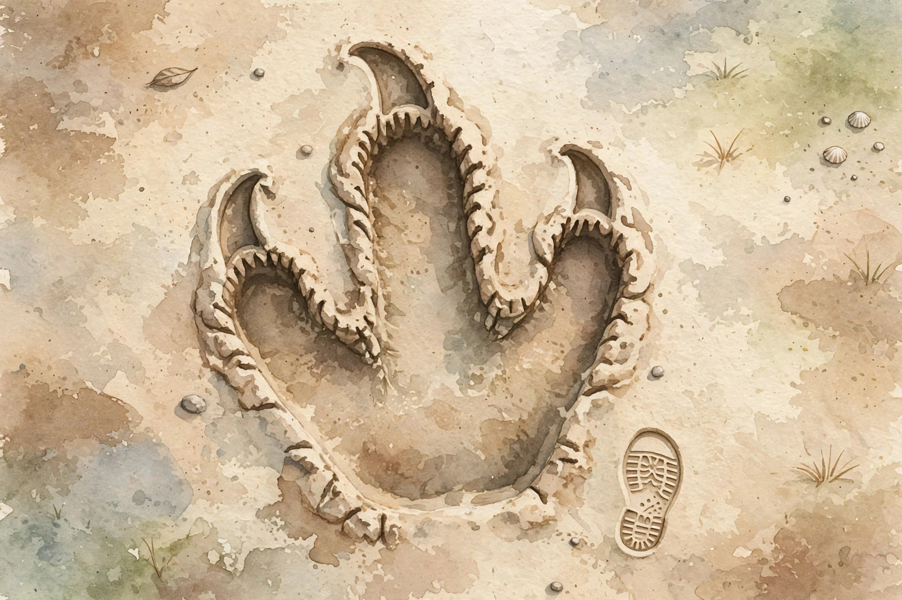

― みなみそうまの きょうりゅう ―

ふくしまけんの 南相馬市で、おおきな あしあとが みつかりました。2026年10月22日に、みなみそうま市から 発表がありました。
あしあとの ながさは、やく70センチ。30センチの ものさしを 2つ ならべても、まだ たりません。
この あしあとが ついたのは、やく1おく6000まん年も むかし。「ジュラ紀」という 時代です。
日本で みつかった ジュラ紀の あしあとの なかでは、いちばん おおきい ものの ひとつです。
あしあとは、むかし ここを きょうりゅうが あるいた しるしです。
子どもの くつ（やく20センチ）を ならべて、あしあとの ながさ（70センチ）に ちかづけて みよう。
マイクの ボタンを おして こえで 話しかけるか、文字を 打って「おくる」を おしてね。きょうりゅうさんが おへんじ するよ。
すなの 上を タップすると、きょうりゅうの あしあとが 1つずつ 出てくるよ。10こ たどれるかな？
ボタンを おすと、むかしへ さかのぼるよ。どこまで 行くかな？
すなの なかに、あしあとが 3つ かくれて いるよ。タップして みつけよう。
いろを えらんで、あしあとを タップすると、その いろに なるよ。
みなみそうま市の 発表（2026年10月22日）をもとに つくりました。